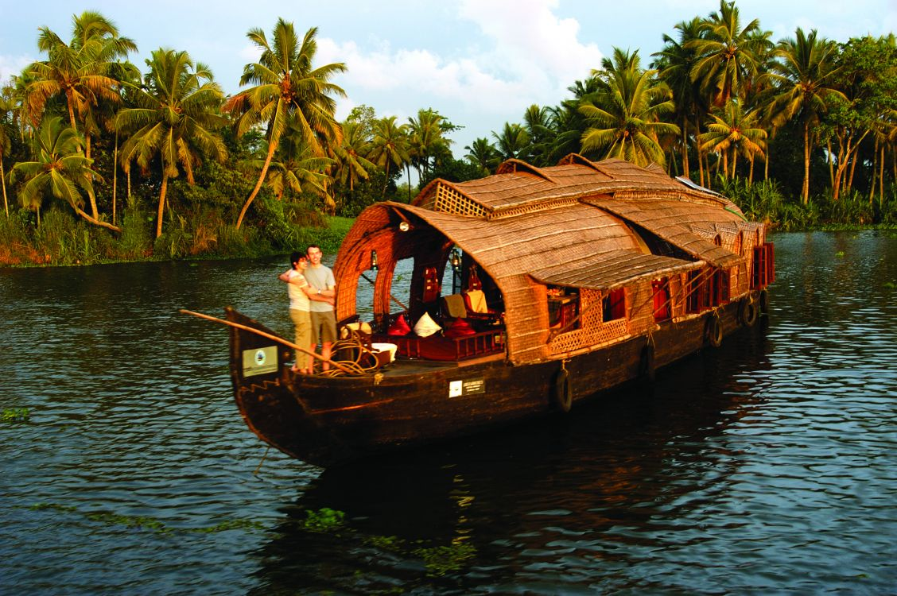
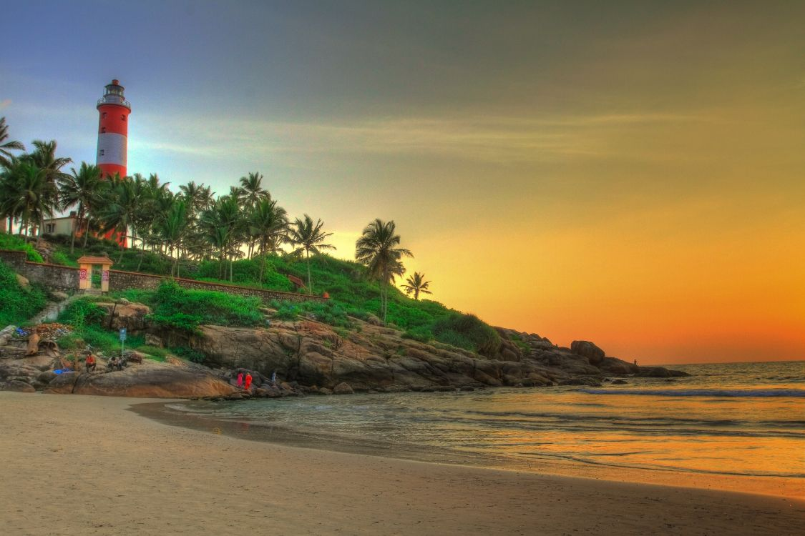
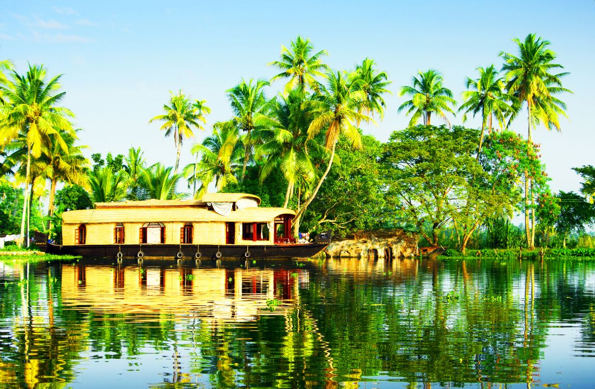

Alleppey
Alleppey, often celebrated for its tranquil backwaters and picturesque houseboat cruises, showcases the calm and timeless charm of Kerala's waterways. The region is lined with coconut trees, paddy fields, and narrow canals where village life unfolds at a gentle pace. Whether exploring the serene Vembanad Lake or drifting past riverside homes and traditional fishing scenes, Alleppey offers a soothing, immersive experience in one of the most beautiful natural settings in South India. Its peaceful atmosphere makes it a favorite destination for relaxation and slow travel.

Alleppey Palm Canal
